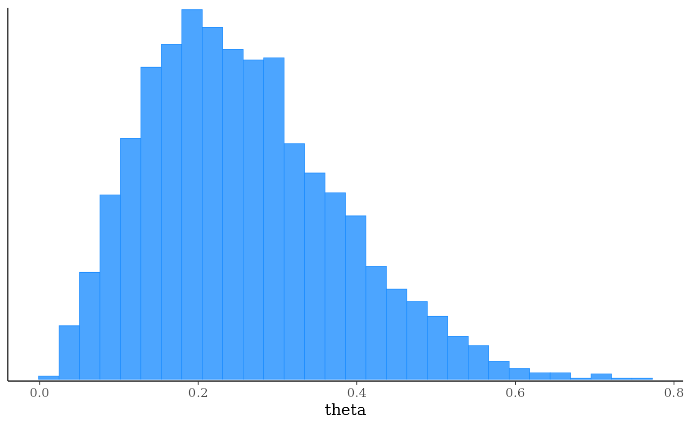

The $sample() method of a CmdStanModel object runs Stan's
main Markov chain Monte Carlo algorithm.
After model fitting any diagnostics specified via the diagnostics
argument will be checked and warnings will be printed if warranted.
Any argument left as NULL will default to the default value used by the
installed version of CmdStan. See the CmdStan User's Guide for more details on the
default arguments. These values are also available via the
$cmdstan_defaults method.
Usage
sample(
data = NULL,
seed = NULL,
refresh = NULL,
init = NULL,
save_latent_dynamics = FALSE,
output_dir = getOption("cmdstanr_output_dir"),
output_basename = NULL,
sig_figs = NULL,
chains = 4,
parallel_chains = getOption("mc.cores", 1),
chain_ids = seq_len(chains),
threads_per_chain = NULL,
opencl_ids = NULL,
iter_warmup = NULL,
iter_sampling = NULL,
save_warmup = FALSE,
thin = NULL,
max_treedepth = NULL,
adapt_engaged = TRUE,
adapt_delta = NULL,
step_size = NULL,
metric = NULL,
metric_file = NULL,
inv_metric = NULL,
init_buffer = NULL,
term_buffer = NULL,
window = NULL,
fixed_param = FALSE,
show_messages = TRUE,
show_exceptions = TRUE,
show_progress_bar = getOption("cmdstanr_progress_bar", FALSE),
show_iteration_messages = !show_progress_bar,
diagnostics = c("divergences", "treedepth", "ebfmi"),
save_metric = getOption("cmdstanr_save_metric", FALSE),
save_cmdstan_config = getOption("cmdstanr_save_config", FALSE),
compress = getOption("cmdstanr_compress", "none")
)Arguments
- data
(multiple options) The data to use for the variables specified in the data block of the Stan program. One of the following:
A named list of R objects with the names corresponding to variables declared in the data block of the Stan program. Internally this list is then written to JSON for CmdStan using
write_stan_json(). Seewrite_stan_json()for details on the conversions performed on R objects before they are passed to Stan.A path to a data file compatible with CmdStan (JSON or R dump). See the appendices in the CmdStan guide for details on using these formats.
NULLor an empty list if the Stan program has no data block.
- seed
(non-negative integer(s)) A seed for the (P)RNG to pass to CmdStan. In the case of multi-chain sampling the single
seedwill automatically be augmented by the run (chain) ID so that each chain uses a different seed. The exception is the transformed data block, which defaults to using same seed for all chains so that the same data is generated for all chains if RNG functions are used. The only timeseedshould be specified as a vector (one element per chain) is if RNG functions are used in transformed data and the goal is to generate different data for each chain.- refresh
(non-negative integer) The number of iterations between printed screen updates. If
refresh = 0, only error messages will be printed.- init
(multiple options) The initialization method to use for the variables declared in the parameters block of the Stan program. One of the following:
A real number
x > 0. This initializes all parameters randomly between[-x, x]on the unconstrained parameter space.The number
0. This initializes all parameters to0on the unconstrained parameter space.A character vector of paths to JSON or Rdump files containing initial values for all or some parameters. For MCMC and Pathfinder, if only a single file is provided it will be reused for all chains and paths. See
write_stan_json()to write R objects to JSON files compatible with CmdStan.A list of lists containing initial values for all or some parameters. For MCMC the list should contain a sublist for each chain, and for Pathfinder it should contain a sublist for each path. For other model fitting methods there should be just one sublist. The sublists should have named elements corresponding to the parameters for which you are specifying initial values. See Examples. A tuple parameter is given as an unnamed list of its elements and a complex parameter as an R complex value, see
write_stan_json().A function that returns a single list with names corresponding to the parameters for which you are specifying initial values. The function can take no arguments or a single argument
chain_id. For MCMC and Pathfinder, the function is called once for each chain or path. If the function has thechain_idargument, it receives the chain or path number, starting at 1. See Examples.A
CmdStanMCMC,CmdStanMLE,CmdStanVB,CmdStanPathfinder, orCmdStanLaplacefit object. If the fit object's parameters are only a subset of the model parameters then the other parameters will be drawn by Stan's default initialization. The fit object must have at least some parameters that are the same name and dimensions as the current Stan model. For thesampleandpathfindermethods, which need one initialization per chain or path, the inits are drawn from the fit object without replacement, so it must contain at least as many draws as the number of chains/paths. ForCmdStanVB,CmdStanLaplace, andCmdStanPathfinderfit objects the draws must additionally be distinct. ACmdStanMLEfit object is the exception: its single draw (the mode) is used to initialize every chain or path. When aCmdStanPathfinderfit object is used as the init, if CmdStan actually performed PSIS resampling (which requiresnum_paths > 1,psis_resample = TRUE, andcalculate_lp = TRUE), CmdStanR selects from the returned draws using uniform weights to avoid applying importance weights again. If CmdStan did not PSIS-resample the output andcalculate_lp = TRUE, CmdStanR selects draws using Pareto-smoothed importance weights. This includes single-path fits withpsis_resample = TRUE, because CmdStan does not PSIS-resample single-path output. Ifcalculate_lp = FALSE, uniform weights are used because importance weights cannot be calculated. PSIS resampling is used to select the draws forCmdStanVB, andCmdStanLaplacefit objects.A type inheriting from
posterior::draws. If the draws object has fewer draws than the number of requested chains/paths, the draws are reused in their existing order until each chain/path has an initialization. If there are more draws than requested chains/paths, draws are selected uniformly without replacement. If the draws object's parameters are only a subset of the model parameters then the other parameters will be drawn by Stan's default initialization. The draws object must have at least some parameters that are the same name and dimensions as the current Stan model.
- save_latent_dynamics
(logical) Should auxiliary diagnostic information about the sampler or variational algorithm be written to diagnostic CSV files? This argument replaces CmdStan's
diagnostic_fileargument. The content is controlled by the user's CmdStan installation. The default isFALSE, which is appropriate for almost every use case. To save temporary diagnostic files permanently, use$save_latent_dynamics_files().- output_dir
(string) A path to a directory where CmdStan should write its output CSV files. For MCMC there will be one file per chain; for other methods there will be a single file. For interactive use this can typically be left at
NULL(temporary directory) since CmdStanR makes the CmdStan output (posterior draws and diagnostics) available in R via methods of the fitted model objects. This can be set for an entire R session usingoptions(cmdstanr_output_dir). The behavior ofoutput_diris as follows:If
NULL(the default), then the CSV files are written to a temporary directory and only saved permanently if the user calls one of the$save_*methods of the fitted model object (e.g.,$save_output_files()). These temporary files are removed when the fitted model object is garbage collected (manually or automatically).If a path, then the files are created in
output_dirwith names corresponding to the defaults used by$save_output_files().
- output_basename
(string) A string to use as a prefix for the names of the output CSV files of CmdStan. If
NULL(the default), the basename of the output CSV files is composed of the model name, timestamp, and a six-character random hexadecimal suffix.- sig_figs
(positive integer) The number of significant figures (up to a maximum of 18) to use when storing the output values. If
NULL(the default), the default from the installed CmdStan version is used. Use$cmdstan_defaults()to check that default. Increasing this value will result in larger output CSV files and thus an increased usage of disk space.- chains
(positive integer) The number of Markov chains to run. The default is 4.
- parallel_chains
(positive integer) The maximum number of MCMC chains to run in parallel. If
parallel_chainsis not specified then the default is to look for the option"mc.cores", which can be set for an entire R session byoptions(mc.cores=value). If the"mc.cores"option has not been set then the default is1.- chain_ids
(integer vector) A vector of chain IDs. Must contain as many unique positive integers as the number of chains. If not set, the default chain IDs are used (integers starting from
1).- threads_per_chain
(positive integer) If the model was compiled with threading support, the number of threads to use in parallelized sections within an MCMC chain (e.g., when using the Stan functions
reduce_sum()ormap_rect()). This is in contrast withparallel_chains, which specifies the number of chains to run in parallel. The actual number of CPU cores used isparallel_chains*threads_per_chain. If not set, CmdStan uses one thread, or the value of theSTAN_NUM_THREADSenvironment variable if that is set. A model built with threading pays a small, constant cost even when it runs on one thread, so build with threading only the models that use it. For an example of using threading see the Stan case study Reduce Sum: A Minimal Example.- opencl_ids
(integer vector of length 2) The platform and device IDs of the OpenCL device to use for fitting. The model must be compiled with
cpp_options = list(stan_opencl = TRUE), otherwise setting this argument is an error.- iter_warmup
(positive integer) The number of warmup iterations to run per chain. Note: in the CmdStan User's Guide this is referred to as
num_warmup.- iter_sampling
(positive integer) The number of post-warmup iterations to run per chain. Note: in the CmdStan User's Guide this is referred to as
num_samples.- save_warmup
(logical) Should warmup iterations be saved? The default is
FALSE.- thin
(positive integer) The period between saved samples. This should typically be left at its default (no thinning) unless memory is a problem.
- max_treedepth
(positive integer) The maximum allowed tree depth for the NUTS engine. See the Tree Depth section of the CmdStan User's Guide for more details.
- adapt_engaged
(logical) Do warmup adaptation? The default is
TRUE. If a precomputed inverse metric is specified via theinv_metricargument (ormetric_file) then, ifadapt_engaged=TRUE, Stan will use the provided inverse metric just as an initial guess during adaptation. To turn off adaptation when using a precomputed inverse metric setadapt_engaged=FALSE.- adapt_delta
(real in
(0,1)) The adaptation target acceptance statistic.- step_size
(positive real) The initial step size for the discrete approximation to continuous Hamiltonian dynamics. This is further tuned during warmup.
- metric
(string) One of
"diag_e","dense_e", or"unit_e", specifying the geometry of the base manifold. See the Euclidean Metric section of the CmdStan User's Guide for more details. To specify a precomputed (inverse) metric, see theinv_metricargument below.- metric_file
(character vector) One path, used for all chains, or one path per chain to JSON or Rdump files compatible with CmdStan that contain precomputed inverse metrics. The
metric_fileargument is inherited from CmdStan but is confusing in that the entry in JSON or Rdump file(s) must be namedinv_metric, referring to the inverse metric. An alternative tometric_fileis theinv_metricargument (see below), which allows specifying an inverse metric directly using a vector or matrix from your R session.- inv_metric
(vector, matrix, or list) A vector (if
metric = "diag_e") or a matrix (ifmetric = "dense_e") for initializing the inverse metric. A single vector or matrix is used for all chains. To initialize the chains with different inverse metrics, provide a list containing one vector or matrix per chain. A length-one list is also used for all chains. This can be used as an alternative to themetric_fileargument. The inverse metric is usually set to an estimate of the posterior covariance. See theadapt_engagedargument above for details about (and control over) how specifying a precomputed inverse metric interacts with adaptation.- init_buffer
(nonnegative integer) Width of initial fast timestep adaptation interval during warmup.
- term_buffer
(nonnegative integer) Width of final fast timestep adaptation interval during warmup.
- window
(nonnegative integer) Initial width of slow timestep/metric adaptation interval.
- fixed_param
(logical) When
TRUE, call CmdStan with argument"algorithm=fixed_param". The default isFALSE. The fixed parameter sampler generates a new sample without changing the current state of the Markov chain; only generated quantities may change. This can be useful when, for example, trying to generate pseudo-data using the generated quantities block.- show_messages
(logical) When
TRUE(the default), prints all output during the execution process, such as iteration numbers and elapsed times. If the output is silenced then the$output()method of the resulting fit object can be used to display the silenced messages.- show_exceptions
(logical) When
TRUE(the default), prints all informational messages, for example rejection of the current proposal. Disable if you wish to silence these messages, but this is not usually recommended unless you are very confident that the model is correct up to numerical error. If the messages are silenced then the$output()method of the resulting fit object can be used to display the silenced messages.- show_progress_bar
(logical) Experimental and may change in a later release. When
TRUE, shows a progress bar through progressr in place of CmdStan's iteration lines. The default isFALSEbut can be set toTRUEfor an entire session byoptions(cmdstanr_progress_bar = TRUE). The bar also needs progressr's reporting turned on once per session. See the Progress bar section below for details.- show_iteration_messages
(logical) Whether to print CmdStan's iteration lines. The default is
!show_progress_bar, so the progress bar replaces them.- diagnostics
(character vector) The diagnostics to automatically check and warn about after sampling. Setting this to an empty string
""orNULLcan be used to prevent CmdStanR from automatically reading in the sampler diagnostics from CSV if you wish to manually read in the results and validate them yourself, for example usingread_cmdstan_csv(). The currently available diagnostics are"divergences","treedepth", and"ebfmi"(the default is to check all of them).These diagnostics are also available after fitting. The
$sampler_diagnostics()method provides access to the diagnostic values for each iteration and the$diagnostic_summary()method provides summaries of the diagnostics and can regenerate the warning messages.Diagnostics like R-hat and effective sample size are not currently available via the
diagnosticsargument but can be checked after fitting using the$summary()method.- save_metric
(logical) When
TRUE, call CmdStan with argument"adaptation save_metric=1"to save the adapted metric in a separate JSON file with elements"stepsize","metric_type"and"inv_metric". The default isFALSEbut can be set toTRUEfor an entire R session byoptions(cmdstanr_save_metric = TRUE).- save_cmdstan_config
(logical) When
TRUE, call CmdStan with argument"output save_config=1"to save a JSON file which contains the argument tree and extra information (equivalent to the output CSV file header). The default isFALSEbut can be set toTRUEfor an entire R session byoptions(cmdstanr_save_config = TRUE).- compress
(string) Compression to apply to the output CSV files after CmdStan finishes (including latent dynamics files, if saved):
"none"(the default),"gzip", or"bzip2". The fit reads compressed files by decompressing them to a temporary copy first, which makes each read slower in exchange for using less disk space. Thecmdstanr_compressoption sets the default for every fitting method.
Value
A CmdStanMCMC object.
Progress bar
Setup
The bar needs two things: show_progress_bar = TRUE, either in each
$sample() call or once per session with
options(cmdstanr_progress_bar = TRUE), and progressr's reporting
turned on once per session with progressr::handlers(global = TRUE). The
following turns on the progress bar for an entire R session:
This also works to enable the bar when another package such as brms
calls $sample() for you.
CmdStanR shows one bar for all chains rather than one per chain, because
older versions of RStudio's console only support single-line bars. The
default is to show the progress bar instead of CmdStan's iteration lines,
but those can be kept with show_iteration_messages = TRUE. The per-chain
timing lines print once the bar is done.
Choosing a bar
The default progress bar is very simple. To customize it, select one of the
many available handlers, for example progressr::handlers("cli"). The
progressr vignette on
handlers
lists the bars it ships and their options.
Overhead and the refresh argument
The bar advances with CmdStan's iteration lines, one every refresh
iterations (CmdStan's default is 100). With refresh = 0 CmdStan prints
none, so no bar is shown. A small refresh adds overhead, because CmdStanR
reads every line CmdStan prints, with or without the bar. For a model that
samples quickly the overhead can be noticeable. For a slow model it is small
next to the sampling time, and refresh = 1 gives the smoothest bar.
References
Hoffman, M. D., and Gelman, A. (2014). The No-U-Turn sampler: adaptively setting path lengths in Hamiltonian Monte Carlo. Journal of Machine Learning Research, 15(47), 1593-1623.
Betancourt, M. (2017). A conceptual introduction to Hamiltonian Monte Carlo. arXiv:1701.02434. Appendix A describes Stan's dynamic HMC/NUTS implementation.
Stan Development Team. Stan Reference Manual (Algorithms section): https://mc-stan.org/docs/reference-manual/
Stan Development Team. Stan documentation: https://mc-stan.org/users/documentation/
Stan Development Team. CmdStan User's Guide: https://mc-stan.org/docs/cmdstan-guide/
See also
Other CmdStanModel methods:
model-method-build_info,
model-method-check_syntax,
model-method-cmdstan_defaults,
model-method-diagnose,
model-method-expose_functions,
model-method-format,
model-method-generate-quantities,
model-method-is_current,
model-method-laplace,
model-method-model-info,
model-method-optimize,
model-method-pathfinder,
model-method-sample_mpi,
model-method-variables,
model-method-variational
Examples
# \dontrun{
file <- file.path(cmdstan_path(), "examples/bernoulli/bernoulli.stan")
mod <- cmdstan_model(file)
stan_data <- list(N = 10, y = c(0,1,0,0,0,0,0,0,0,1))
# Four chains in parallel with the number of iterations set
fit <- mod$sample(
data = stan_data,
seed = 123,
chains = 4,
parallel_chains = 4,
iter_warmup = 500,
iter_sampling = 1000
)
#> Running MCMC with 4 parallel chains...
#>
#> Chain 1 Iteration: 1 / 1500 [ 0%] (Warmup)
#> Chain 1 Iteration: 100 / 1500 [ 6%] (Warmup)
#> Chain 1 Iteration: 200 / 1500 [ 13%] (Warmup)
#> Chain 1 Iteration: 300 / 1500 [ 20%] (Warmup)
#> Chain 1 Iteration: 400 / 1500 [ 26%] (Warmup)
#> Chain 1 Iteration: 500 / 1500 [ 33%] (Warmup)
#> Chain 1 Iteration: 501 / 1500 [ 33%] (Sampling)
#> Chain 1 Iteration: 600 / 1500 [ 40%] (Sampling)
#> Chain 1 Iteration: 700 / 1500 [ 46%] (Sampling)
#> Chain 1 Iteration: 800 / 1500 [ 53%] (Sampling)
#> Chain 1 Iteration: 900 / 1500 [ 60%] (Sampling)
#> Chain 1 Iteration: 1000 / 1500 [ 66%] (Sampling)
#> Chain 1 Iteration: 1100 / 1500 [ 73%] (Sampling)
#> Chain 1 Iteration: 1200 / 1500 [ 80%] (Sampling)
#> Chain 1 Iteration: 1300 / 1500 [ 86%] (Sampling)
#> Chain 1 Iteration: 1400 / 1500 [ 93%] (Sampling)
#> Chain 1 Iteration: 1500 / 1500 [100%] (Sampling)
#> Chain 2 Iteration: 1 / 1500 [ 0%] (Warmup)
#> Chain 2 Iteration: 100 / 1500 [ 6%] (Warmup)
#> Chain 2 Iteration: 200 / 1500 [ 13%] (Warmup)
#> Chain 2 Iteration: 300 / 1500 [ 20%] (Warmup)
#> Chain 2 Iteration: 400 / 1500 [ 26%] (Warmup)
#> Chain 2 Iteration: 500 / 1500 [ 33%] (Warmup)
#> Chain 2 Iteration: 501 / 1500 [ 33%] (Sampling)
#> Chain 2 Iteration: 600 / 1500 [ 40%] (Sampling)
#> Chain 2 Iteration: 700 / 1500 [ 46%] (Sampling)
#> Chain 2 Iteration: 800 / 1500 [ 53%] (Sampling)
#> Chain 2 Iteration: 900 / 1500 [ 60%] (Sampling)
#> Chain 2 Iteration: 1000 / 1500 [ 66%] (Sampling)
#> Chain 2 Iteration: 1100 / 1500 [ 73%] (Sampling)
#> Chain 2 Iteration: 1200 / 1500 [ 80%] (Sampling)
#> Chain 2 Iteration: 1300 / 1500 [ 86%] (Sampling)
#> Chain 2 Iteration: 1400 / 1500 [ 93%] (Sampling)
#> Chain 2 Iteration: 1500 / 1500 [100%] (Sampling)
#> Chain 3 Iteration: 1 / 1500 [ 0%] (Warmup)
#> Chain 3 Iteration: 100 / 1500 [ 6%] (Warmup)
#> Chain 3 Iteration: 200 / 1500 [ 13%] (Warmup)
#> Chain 3 Iteration: 300 / 1500 [ 20%] (Warmup)
#> Chain 3 Iteration: 400 / 1500 [ 26%] (Warmup)
#> Chain 3 Iteration: 500 / 1500 [ 33%] (Warmup)
#> Chain 3 Iteration: 501 / 1500 [ 33%] (Sampling)
#> Chain 3 Iteration: 600 / 1500 [ 40%] (Sampling)
#> Chain 3 Iteration: 700 / 1500 [ 46%] (Sampling)
#> Chain 3 Iteration: 800 / 1500 [ 53%] (Sampling)
#> Chain 3 Iteration: 900 / 1500 [ 60%] (Sampling)
#> Chain 3 Iteration: 1000 / 1500 [ 66%] (Sampling)
#> Chain 3 Iteration: 1100 / 1500 [ 73%] (Sampling)
#> Chain 3 Iteration: 1200 / 1500 [ 80%] (Sampling)
#> Chain 3 Iteration: 1300 / 1500 [ 86%] (Sampling)
#> Chain 3 Iteration: 1400 / 1500 [ 93%] (Sampling)
#> Chain 3 Iteration: 1500 / 1500 [100%] (Sampling)
#> Chain 4 Iteration: 1 / 1500 [ 0%] (Warmup)
#> Chain 4 Iteration: 100 / 1500 [ 6%] (Warmup)
#> Chain 4 Iteration: 200 / 1500 [ 13%] (Warmup)
#> Chain 4 Iteration: 300 / 1500 [ 20%] (Warmup)
#> Chain 4 Iteration: 400 / 1500 [ 26%] (Warmup)
#> Chain 4 Iteration: 500 / 1500 [ 33%] (Warmup)
#> Chain 4 Iteration: 501 / 1500 [ 33%] (Sampling)
#> Chain 4 Iteration: 600 / 1500 [ 40%] (Sampling)
#> Chain 4 Iteration: 700 / 1500 [ 46%] (Sampling)
#> Chain 4 Iteration: 800 / 1500 [ 53%] (Sampling)
#> Chain 4 Iteration: 900 / 1500 [ 60%] (Sampling)
#> Chain 4 Iteration: 1000 / 1500 [ 66%] (Sampling)
#> Chain 4 Iteration: 1100 / 1500 [ 73%] (Sampling)
#> Chain 4 Iteration: 1200 / 1500 [ 80%] (Sampling)
#> Chain 4 Iteration: 1300 / 1500 [ 86%] (Sampling)
#> Chain 4 Iteration: 1400 / 1500 [ 93%] (Sampling)
#> Chain 4 Iteration: 1500 / 1500 [100%] (Sampling)
#> Chain 1 finished in 0.0 seconds.
#> Chain 2 finished in 0.0 seconds.
#> Chain 3 finished in 0.0 seconds.
#> Chain 4 finished in 0.0 seconds.
#>
#> All 4 chains finished successfully.
#> Mean chain execution time: 0.0 seconds.
#> Total execution time: 0.2 seconds.
#>
fit$summary()
#> # A tibble: 2 × 10
#> variable mean median sd mad q5 q95 rhat ess_bulk ess_tail
#> <chr> <dbl> <dbl> <dbl> <dbl> <dbl> <dbl> <dbl> <dbl> <dbl>
#> 1 lp__ -7.27 -6.98 0.731 0.322 -8.75 -6.75 1.00 1936. 2012.
#> 2 theta 0.256 0.241 0.121 0.122 0.0825 0.479 1.00 1581. 1779.
fit$diagnostic_summary()
#> $num_divergent
#> [1] 0 0 0 0
#>
#> $num_max_treedepth
#> [1] 0 0 0 0
#>
#> $ebfmi
#> [1] 1.107274 1.119162 1.104656 1.085354
#>
bayesplot::mcmc_hist(fit$draws("theta"))
#> `stat_bin()` using `bins = 30`. Pick better value `binwidth`.

# Sampler settings, here the target acceptance rate and initial step size.
# refresh = 0 here and below turns off the iteration updates.
fit <- mod$sample(
data = stan_data,
seed = 123,
adapt_delta = 0.95,
step_size = 0.01,
refresh = 0
)
#> Running MCMC with 4 sequential chains...
#>
#> Chain 1 finished in 0.0 seconds.
#> Chain 2 finished in 0.0 seconds.
#> Chain 3 finished in 0.0 seconds.
#> Chain 4 finished in 0.0 seconds.
#>
#> All 4 chains finished successfully.
#> Mean chain execution time: 0.0 seconds.
#> Total execution time: 0.5 seconds.
#>
# Keep the warmup draws
fit <- mod$sample(
data = stan_data,
seed = 123,
save_warmup = TRUE,
refresh = 0
)
#> Running MCMC with 4 sequential chains...
#>
#> Chain 1 finished in 0.0 seconds.
#> Chain 2 finished in 0.0 seconds.
#> Chain 3 finished in 0.0 seconds.
#> Chain 4 finished in 0.0 seconds.
#>
#> All 4 chains finished successfully.
#> Mean chain execution time: 0.0 seconds.
#> Total execution time: 0.5 seconds.
#>
fit$draws(inc_warmup = TRUE)
#> # A draws_array: 2000 iterations, 4 chains, and 2 variables
#> , , variable = lp__
#>
#> chain
#> iteration 1 2 3 4
#> 1 -18 -19.2 -6.8 -7.9
#> 2 -18 -19.2 -6.8 -7.9
#> 3 -16 -10.2 -6.8 -7.8
#> 4 -16 -9.6 -7.0 -7.1
#> 5 -18 -10.2 -6.8 -7.2
#>
#> , , variable = theta
#>
#> chain
#> iteration 1 2 3 4
#> 1 0.86 0.876 0.30 0.47
#> 2 0.86 0.876 0.30 0.47
#> 3 0.82 0.038 0.30 0.45
#> 4 0.83 0.046 0.35 0.37
#> 5 0.86 0.038 0.28 0.37
#>
#> # ... with 1995 more iterations
# A progress bar in place of the iteration messages. progressr's
# reporting is turned on once per session, see the Progress bar section.
if (interactive()) {
progressr::handlers(global = TRUE)
fit <- mod$sample(data = stan_data, seed = 123, show_progress_bar = TRUE)
}
# }
# \dontrun{
# The rest of these examples work the same way for every fitting method.
# Draws as a posterior draws object
fit$draws()
#> # A draws_array: 1000 iterations, 4 chains, and 2 variables
#> , , variable = lp__
#>
#> chain
#> iteration 1 2 3 4
#> 1 -7.0 -6.8 -7.7 -9.7
#> 2 -7.9 -6.9 -6.7 -8.6
#> 3 -7.4 -6.9 -6.8 -9.8
#> 4 -6.7 -6.8 -6.7 -10.1
#> 5 -6.9 -6.8 -6.9 -7.5
#>
#> , , variable = theta
#>
#> chain
#> iteration 1 2 3 4
#> 1 0.17 0.28 0.44 0.046
#> 2 0.46 0.19 0.24 0.070
#> 3 0.41 0.19 0.23 0.044
#> 4 0.25 0.28 0.25 0.039
#> 5 0.18 0.23 0.31 0.421
#>
#> # ... with 995 more iterations
fit$draws("theta", format = "df")
#> # A draws_df: 1000 iterations, 4 chains, and 1 variables
#> theta
#> 1 0.17
#> 2 0.46
#> 3 0.41
#> 4 0.25
#> 5 0.18
#> 6 0.33
#> 7 0.15
#> 8 0.29
#> 9 0.24
#> 10 0.24
#> # ... with 3990 more draws
#> # ... hidden reserved variables {'.chain', '.iteration', '.draw'}
# Data as a path to a JSON or R dump file instead of a list
data_file <- file.path(
cmdstan_path(),
"examples/bernoulli/bernoulli.data.json"
)
fit <- mod$sample(data = data_file, seed = 123, refresh = 0)
#> Running MCMC with 4 sequential chains...
#>
#> Chain 1 finished in 0.0 seconds.
#> Chain 2 finished in 0.0 seconds.
#> Chain 3 finished in 0.0 seconds.
#> Chain 4 finished in 0.0 seconds.
#>
#> All 4 chains finished successfully.
#> Mean chain execution time: 0.0 seconds.
#> Total execution time: 0.5 seconds.
#>
# Initial values from a function
fit <- mod$sample(
data = stan_data,
seed = 123,
init = function() list(theta = runif(1)),
refresh = 0
)
#> Running MCMC with 4 sequential chains...
#>
#> Chain 1 finished in 0.0 seconds.
#> Chain 2 finished in 0.0 seconds.
#> Chain 3 finished in 0.0 seconds.
#> Chain 4 finished in 0.0 seconds.
#>
#> All 4 chains finished successfully.
#> Mean chain execution time: 0.0 seconds.
#> Total execution time: 0.5 seconds.
#>
fit$init()
#> [[1]]
#> [[1]]$theta
#> [1] 0.3977716
#>
#>
#> [[2]]
#> [[2]]$theta
#> [1] 0.8498828
#>
#>
#> [[3]]
#> [[3]]$theta
#> [1] 0.7418456
#>
#>
#> [[4]]
#> [[4]]$theta
#> [1] 0.3177902
#>
#>
# Initial values as one list per chain
fit <- mod$sample(
data = stan_data,
seed = 123,
chains = 2,
refresh = 0,
init = list(
list(theta = 0.75), # chain 1
list(theta = 0.25) # chain 2
)
)
#> Running MCMC with 2 sequential chains...
#>
#> Chain 1 finished in 0.0 seconds.
#> Chain 2 finished in 0.0 seconds.
#>
#> Both chains finished successfully.
#> Mean chain execution time: 0.0 seconds.
#> Total execution time: 0.2 seconds.
#>
fit$init()
#> [[1]]
#> [[1]]$theta
#> [1] 0.75
#>
#>
#> [[2]]
#> [[2]]$theta
#> [1] 0.25
#>
#>
# Initial values from a previous fit (can be a fit from a different method)
fit2 <- mod$sample(
data = stan_data,
seed = 123,
init = fit,
refresh = 0
)
#> Merging chains in order to subset via 'draw'.
#> Running MCMC with 4 sequential chains...
#>
#> Chain 1 finished in 0.0 seconds.
#> Chain 2 finished in 0.0 seconds.
#> Chain 3 finished in 0.0 seconds.
#> Chain 4 finished in 0.0 seconds.
#>
#> All 4 chains finished successfully.
#> Mean chain execution time: 0.0 seconds.
#> Total execution time: 0.5 seconds.
#>
# Initial values from a posterior::draws object
inits <- fit$draws()
fit <- mod$sample(
data = stan_data,
seed = 123,
init = inits,
refresh = 0
)
#> Merging chains in order to subset via 'draw'.
#> Running MCMC with 4 sequential chains...
#>
#> Chain 1 finished in 0.0 seconds.
#> Chain 2 finished in 0.0 seconds.
#> Chain 3 finished in 0.0 seconds.
#> Chain 4 finished in 0.0 seconds.
#>
#> All 4 chains finished successfully.
#> Mean chain execution time: 0.0 seconds.
#> Total execution time: 0.5 seconds.
#>
# Suppress output from CmdStan while it runs
fit <- mod$sample(
data = stan_data,
seed = 123,
show_messages = FALSE,
show_exceptions = FALSE
)
# The CSV files CmdStan wrote, in a temporary directory by default. Move
# them to keep them past the R session. Replace tempdir below with a
# directory you'll keep.
fit$output_files()
#> [1] "/tmp/RtmpOsjGdL/bernoulli-202610192208-01-8729b6.csv"
#> [2] "/tmp/RtmpOsjGdL/bernoulli-202610192208-02-8729b6.csv"
#> [3] "/tmp/RtmpOsjGdL/bernoulli-202610192208-03-8729b6.csv"
#> [4] "/tmp/RtmpOsjGdL/bernoulli-202610192208-04-8729b6.csv"
my_dir <- tempdir()
fit$save_output_files(dir = my_dir, basename = "bernoulli")
#> Moved 4 files and set internal paths to new locations:
#> - /tmp/RtmpOsjGdL/bernoulli-202610192208-01-056f1d.csv
#> - /tmp/RtmpOsjGdL/bernoulli-202610192208-02-056f1d.csv
#> - /tmp/RtmpOsjGdL/bernoulli-202610192208-03-056f1d.csv
#> - /tmp/RtmpOsjGdL/bernoulli-202610192208-04-056f1d.csv
# Or use output_dir to have CmdStan write them there in the first place,
# here gzip-compressed to save disk space
fit <- mod$sample(
data = stan_data,
seed = 123,
output_dir = my_dir,
output_basename = "bernoulli",
compress = "gzip",
refresh = 0
)
#> Running MCMC with 4 sequential chains...
#>
#> Chain 1 finished in 0.0 seconds.
#> Chain 2 finished in 0.0 seconds.
#> Chain 3 finished in 0.0 seconds.
#> Chain 4 finished in 0.0 seconds.
#>
#> All 4 chains finished successfully.
#> Mean chain execution time: 0.0 seconds.
#> Total execution time: 0.5 seconds.
#>
fit$output_files()
#> [1] "/tmp/RtmpOsjGdL/bernoulli-01.csv.gz" "/tmp/RtmpOsjGdL/bernoulli-02.csv.gz"
#> [3] "/tmp/RtmpOsjGdL/bernoulli-03.csv.gz" "/tmp/RtmpOsjGdL/bernoulli-04.csv.gz"
# }